Debian "Jessie" is the latest stable release of the popular Linux operating system. I use Debian's minimal network install image to create a console-only base configuration that can be customized for various tasks and alternate desktops. [1]
Let's go!
Debian GNU/Linux is an operating system created by volunteers of one of the largest and longest-running free software projects in the world. There are 3 release branches: jessie/stable, stretch/testing, and sid/unstable.
Below is a visual walk-through of a sample workstation setup that makes use of the entire disk divided into 2 partitions: a boot partition, [2] and an encrypted partition used by the Logical Volume Manager (LVM) to create "virtual partitions" (Logical Volumes). Installing LVM on top of the encrypted partition allows:
- creation of multiple LVs protected by a single passphrase entered at boot time
- dynamic resizing of filesystems (set aside unallocated space and make use of it as needed)
- snapshots of filesystems that can be used as backups or to restore a previous state [3]
0. Prepare install media
Download the (unofficial image that includes non-free firmware) 64bit firmware-VERSION-amd64-netinst.iso (32bit image for older machines) and flash the image to a USB stick. [4]
Minimal installer (requires network connection) downloads all the latest packages during setup.
1. Launch
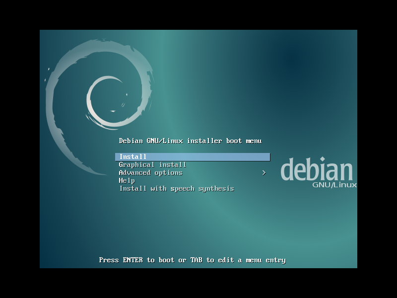 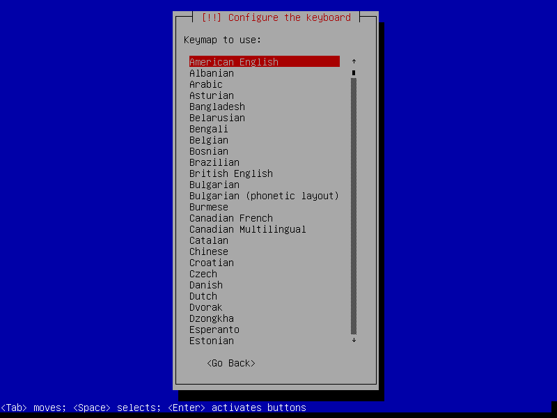
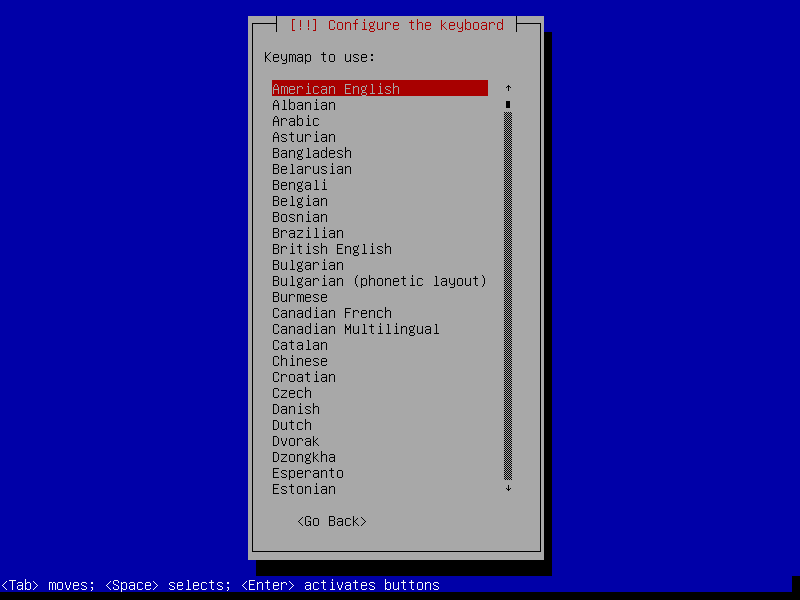

 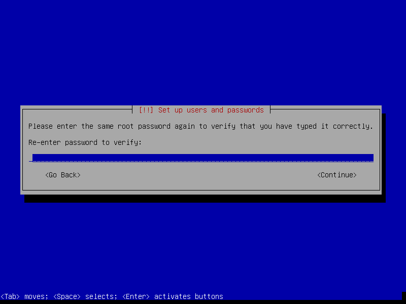
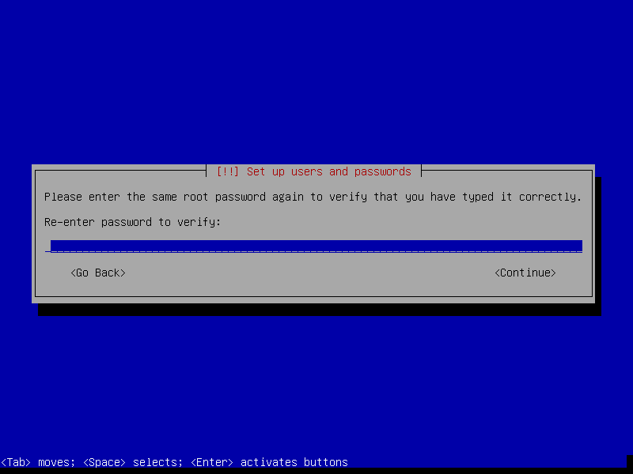

 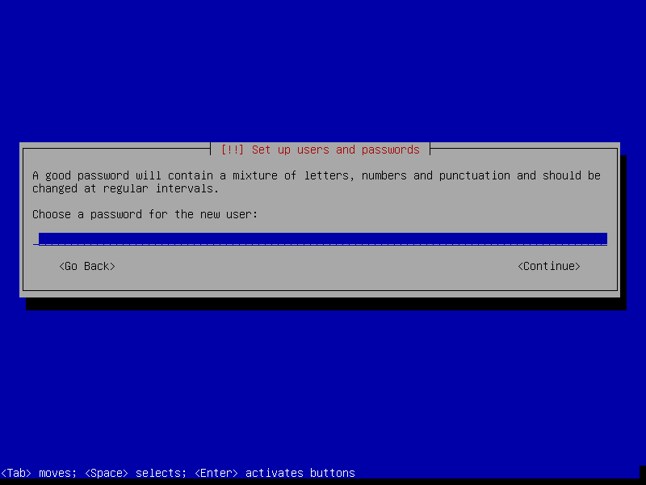
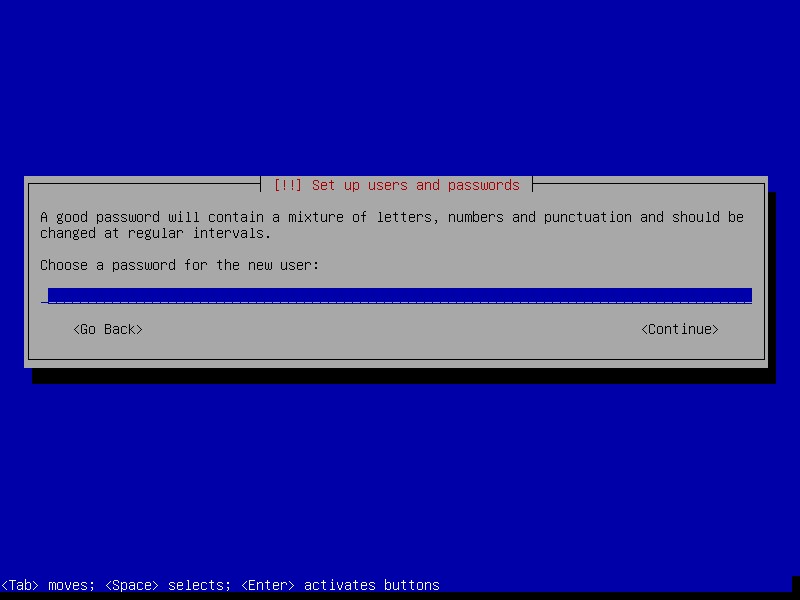


2. Partitions
Sample layout:
- sda1 is a 512MB boot partition
- sda2 uses the remaining storage as a LUKS encrypted partition
- LVM is installed on the encrypted partition, and contains a volume group with the 3 logical volumes root + swap + home


 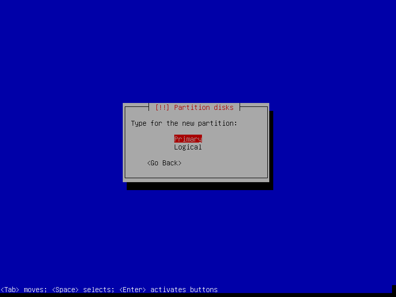
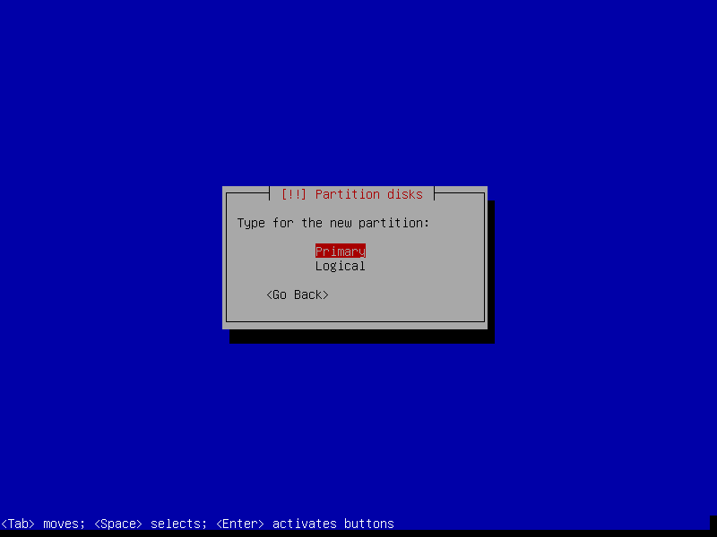

Modify the default mount options ... [5]
Mount point: /boot
Mount options: relatime
Bootable flag: on
Assign the remaining storage to the encrypted partition ...
Modify the default mount options ...
Use as: physical volume for encryption
Erase data: no
If the hard disk has not been securely wiped prior to installing Debian you may want to configure Erase data: yes. Note, however, depending on the size of the disk this operation can last several hours.


Modify the default mount options ...
Use as: physical volume for LVM


Set aside some unused space for future requirements. LVM makes it easy to expand or create new filesystems as needed ...
Modify the default mount options ...
Use as: Ext4
Mount point: /
Mount options: relatime
Modify the default mount options ...
Use as: swap area
Modify the default mount options ... [6]
Use as: Ext4
Mount point: /home
Mount options: relatime
Reserved blocks: 1%
3. Install packages and finish up

Use the Debian global mirrors service deb.debian.org ...
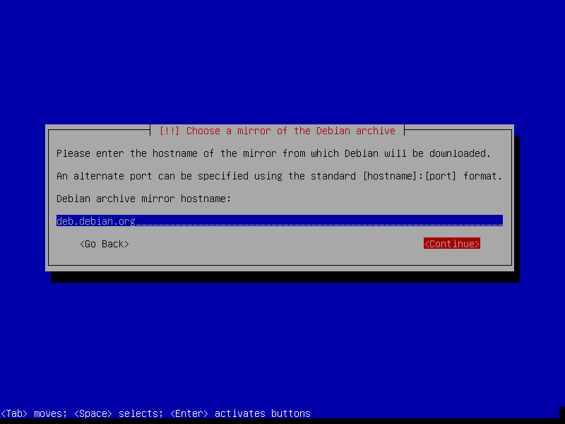 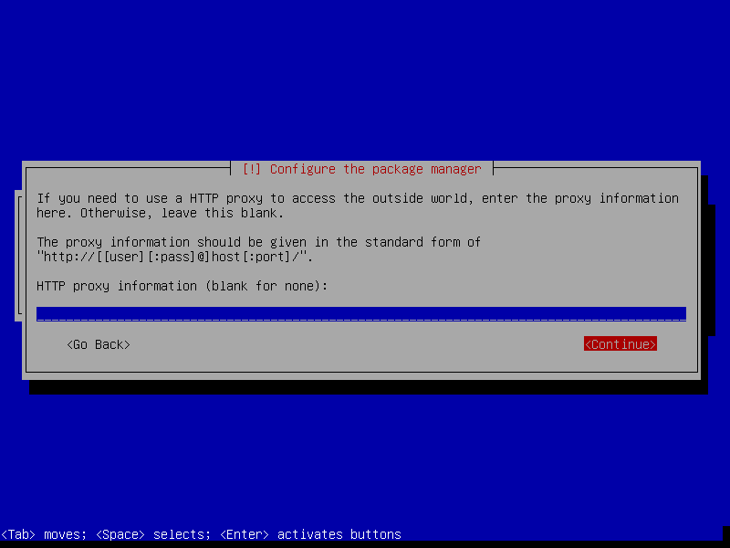
Select only [*] standard system utilities and leave the remaining tasks [7] unmarked ...
Packages are downloaded and the installer makes its finishing touches ...
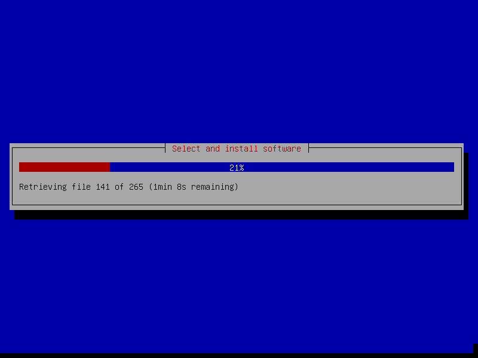

4. First boot

User is prompted for the passphrase to unlock the encrypted partition ...
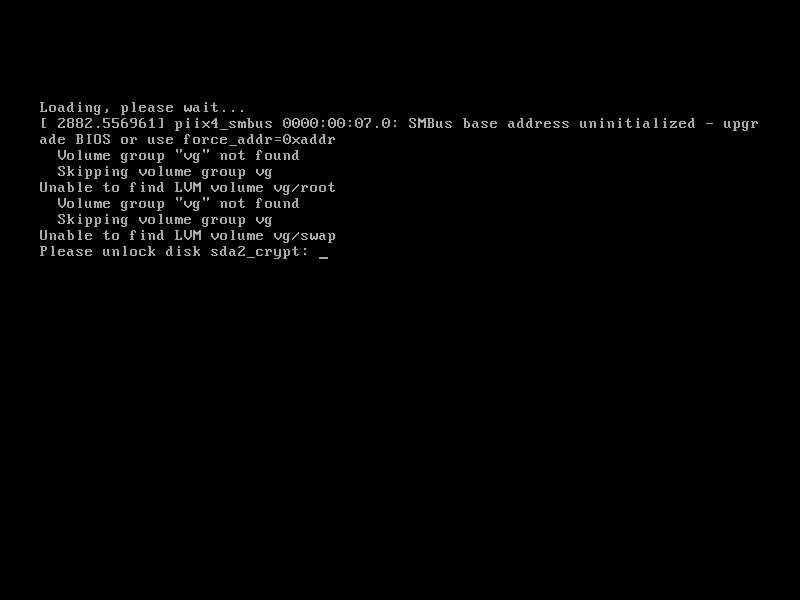 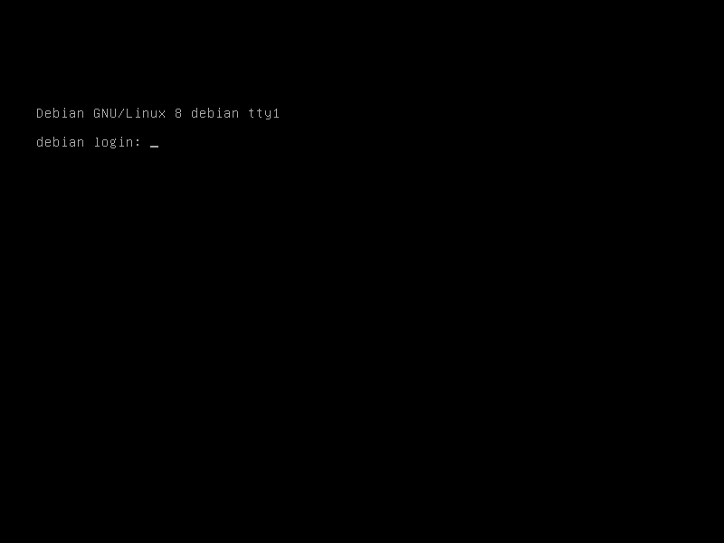Login and run timedatectl to confirm system date+time is properly configured.
5. GRUB
After running a minimal install on my Acer C720 Chromebook with encrypted swap + home partitions I ran into this issue: "Black screen instead of password prompt for boot encryption".
I had to enter my passphrase blind and ALT+F1 to console. When I tried removing the GRUB options splash and/or quiet I lost the ability to enter the passphrase at all and a hard reset was required.
Fix: Modify /etc/default/grub ...
## Force the kernel to boot in normal text mode with '=text'
GRUB_GFXPAYLOAD_LINUX=text
... and update ...
# update-grub
Now it works! My chromebook is currently the only device I have run into this issue.
See: GNU gfxpayload
6. Network
Check which network interfaces are detected and settings ...
$ ip a
Wired interfaces are usually auto-configured by default and assigned an IP address courtesy of DHCP.
To assign a static address, deactivate the wired interface and create a new entry in /etc/network/interfaces. [8] Sample entry for enp3s0 ...
# The primary network interface
auto enp3s0
iface enp3s0 inet static
address 192.168.1.88
netmask 255.255.255.0
gateway 192.168.1.1
dns-nameservers 8.8.8.8 8.8.4.4
Bring up|down interface with if{up,down} enp3s0.
Create a temporary wireless interface connection to WPA2 encrypted access points manually using wpa_supplicant + wpa_passphrase + dhclinet. Sample setup of wlp1s0 ...
# ip link set wlp1s0 up ## bring up interface
# iw dev wlp1s0 link ## get link status
# iw dev wlp1s0 scan | grep SSID ## scan for access points
# wpa_supplicant -i wlp1s0 -c<(wpa_passphrase "MY_SSID" "MY_PASSPHRASE") ## connect to WPA/WPA2 ... add '-B' to background process
# dhclient wlp1s0 ## obtain IP address
More permanent configurations may be set in interfaces. Sample setup [9] with a static IP address ...
iface wlp1s0 inet static
address 192.168.1.77
netmask 255.255.255.0
gateway 192.168.1.1
wpa-ssid MY_SSID
wpa-psk MY_PASSPHRASE
dns-nameservers 8.8.8.8 8.8.4.4
Alternative setup using DHCP ...
allow-hotplug wlp1s0
iface wlp1s0 inet dhcp
wpa-ssid MY_SSID
wpa-psk MY_PASSPHRASE
dns-nameservers 8.8.8.8 8.8.4.4
Once a link is established install an (optional) network manager utility. Packages network-manager and network-manager-gnome provide the console nmcli and graphical nm-applet clients respectively . Comment out (deactivate) any entries in interfaces that will be managed by network-manager.
7. Where to go next ...
... is up to YOU. Yeehaw.
Happy hacking!
Notes
| [1] | Image courtesy of jschild. |
| [2] | Note that encrypted root requires an unencrypted boot. |
| [3] | Very helpful! LVM post on the Arch Wiki. |
| [4] | An alternative is adding the image to a USB stick with multiple Linux installers. |
| [5] | Mount options: relatime decreases write operations and boosts drive speed. |
| [6] | Reserved blocks can be used by privileged system processes to write to disk - useful if a full filesystem blocks users from writing - and reduce disk fragmentation. On large non-root partitions extra space can be gained by reducing the default 5% reserve set aside by Debian to 1%. |
| [7] | Task selection menu can be used post-install by running (as root) tasksel. |
| [8] | Problem: setting the network interface to static address can result in /etc/resolv.conf being overwritten every few minutes with an IPv6 address that breaks DNS. The "fix" is to maually set nameserver 8.8.8.8 in resolv.conf and install the resolvconf package. Note that dns-nameservers entries are ignored if resolvconf is not installed. |
| [9] | Multiple wireless static IP address setups can be created with iface wlp1s0_NAME inet static and [de]activated with if{up.down} wlp1s0=wlp1s0_NAME. |